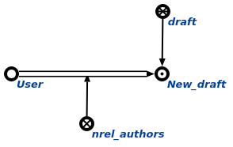

Команда пользовательского интерфейса добавления нового черновика предназначена для добавления нового черновика. Единственным аргументом команды является знак разработчика. Результатом выполнения команды является появление нового черновика у указанного разработчика.
